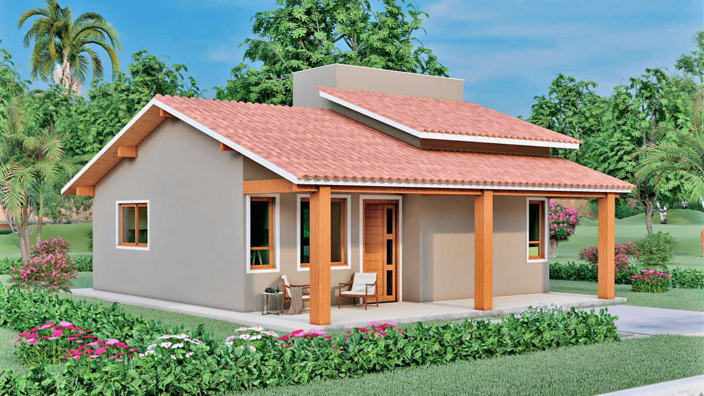

Nome da Postagem

Se você está em busca de experiência autêntica da culinária do Norte no coração de Araraquara, não procure mais! A Casa do Norte conquistou meu coração (e meu paladar) com suas irresistÃveis comidas caseiras e autênticas, trazendo o calor e sabor diretamente da região nortista. 🍲
Sabores Autênticos do Norte: Ao entrar na Casa do Norte, fui transportado para um ambiente acolhedor e cheio de personalidade, que reflete fielmente as tradições e a hospitalidade da culinária do Norte do Brasil. Os pratos oferecidos são verdadeiramente autênticos, preparados com ingredientes frescos e amor. 🥘
Variedade de Opções para Todos os Paladares: O cardápio diversificado oferece uma ampla gama de opções, desde deliciosos pratos de peixe até carnes suculentas e, é claro, uma seleção incrÃvel de acompanhamentos que capturam os verdadeiros sabores do Norte. Não importa se você é fã de vatapá, tacacá, ou simplesmente está procurando uma deliciosa feijoada, a Casa do Norte tem algo para todos. 👨‍🍳
Equipe Atenciosa e Apaixonada: A equipe da Casa do Norte é mais do que uma equipe, são verdadeiros embaixadores da cultura gastronômica nortista. Com atendimento caloroso e atencioso, eles estão sempre dispostos a compartilhar informações sobre os pratos e garantir que sua experiência seja inesquecÃvel. 🌈
Ambiente Aconchegante: Além da comida incrÃvel, o ambiente da Casa do Norte é aconchegante e convida a relaxar. A decoração temática, a música envolvente e o espÃrito acolhedor tornam este lugar não apenas um restaurante, mas uma verdadeira experiência cultural. 🌟
Conclusão: Uma Jornada Gastronômica InesquecÃvel: Se você ainda não experimentou as delÃcias da Casa do Norte em Araraquara, recomendo fortemente que faça uma visita. Prepare-se para uma jornada gastronômica inesquecÃvel, onde cada prato conta uma história de tradição e paixão pela culinária regional. Casa do Norte, obrigado por trazer os autênticos sabores do Norte até nós! Mal posso esperar pela minha próxima visita. 👏🍽️ #CasaDoNorte #CulinariaNortista #AraraquaraGastronomica